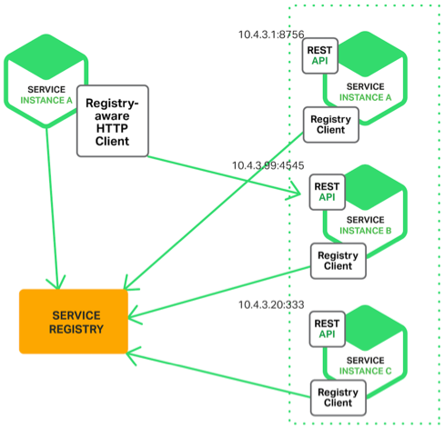

35-微服务架构最佳实践 - 基础设施篇
自动化测试
微服务将原来大一统的系统拆分成多个可以独立运行的服务，微服务之间的接口数量大大增加，并且微服务提倡快速交付，版本周期短，版本更新频繁。如果每次靠人工回归测试，则工作量大，效率低，无法做到快速交付的目的。因此必须通过自动化测试系统来完成绝大部分测试回归工作。
自动化测试涵盖的范围包括代码级的单元测试、单个系统级的集成测试、系统间的接口测试、理想情况下每类测试自动化。如果无法做到全面覆盖，至少要做到接口测试自动化。
自动化部署
自动化部署系统包括版本管理、资源管理(机器管理、虚拟机管理)、部署操作、回退操作等功能。
配置中心
微服务的节点数量非常多，通过人工登录每台机器手工修改，效率低，容易出错。特别在部署或排障时，需要快速增删改查配置，人工操作的方式肯定不行。并且，有的运行配置需要动态修改并且所有节点即时生效，人工操作是无法达到的。
配置中心包括配置版本管理、增删改查配置、节点管理、配置同步、配置推送等。
接口框架
微服务提倡轻量级的通信方式，一般采用http/rest或者rpc方式统一接口协议。但在实践中除了统一接口协议，还需要统一接口传递的数据格式。例如可以指定数据格式为json，并且格式遵循统一的规范。
接口框架不是一个可独立运行的服务，一般是以包或者库的方式提供给微服务调用。针对上面的json样例，可以提供不同语言的解析包。
API网关
系统拆分成微服务后，内部微服务之间的互联互通的，相互之间的访问是点对点的。如果外部系统想调用系统的某一个功能，也采取点对点的方式，则非常不方便。对于外部系统来说，它不需要也没办法理解这么多微服务的职责分工和边界，它只会关注它需要什么能力，而不会关注这个能力由哪个微服务提供。
除此之前，外部系统访问系统还涉及安全和权限相关的限制，如果外部系统直接访问某个微服务，则意味着每个微服务都要自己实现安全和权限的功能，这样做不仅工作量大，而且是重复工作。
所以，微服务需要统一的API网关，负责对外系统的访问。
API网关是外部系统访问的接口，所有的外部系统接入系统都需要通过API网关，主要包括鉴权、权限控制、传输加密、请求路由、流量控制等功能。
服务发现
微服务种类和数量非常多，如果这些信息都是通过手动配置的方式写入各个微服务节点中，首选配置量非常大，其次微服务节点经常发生变化、可能由于扩容增加节点，也可能由于故障缩减节点、还可能采用灰度发布，先将一部分节点升级到新版本，然后让新老版本一起使用。无论哪种情况，都希望节点的变化及时同步到所有其它依赖的微服务。如果采用自动配置的方式，是无法做到实时更改生效的。因此需要服务发现系统来支撑服务的自动注册和发现。
服务发现的二种实现方式：自理式和代理式
- 自理式

自理式结构是指每个微服务自己完成服务发现。例如，图中service instance A访问service registry获取服务注册信息，然后直接访问service instance B。
自理式服务发现比较简单，一般通过统一的程序库或者程序包提供给各个微服务调用，并且由于每个微服务都承担服务发现的功能，访问压力分散到各个微服务节点，节能和可用性不存在明显的压力的风险。
- 代理式
代理式结构就是指微服务之前有一个负载均衡系统，由负载均衡系统来完成微服务之间的服务发现。
代理式的方式看起来更加清晰，微服务本身的实现也简单很多，但其存在风险。一是可用性风险，如果负载均衡系统挂掉，整个微服务系统不可用。二是性能风险，所有的微服务调用都需要经过负载均衡系统，性能压力随着微服务的增加和流量的增加而不断增加，最后成为性能瓶颈。因为负载均衡系统需要设计成高可用架构、而负载均衡系统集群的本身的实现又增加了复杂性。
不管是自理式还是代理式，服务发现的核心功能是服务注册表，注册表记录了所有服务节点的配置和状态、每个微服务启动时都需要将自己的信息注册到服务注册表，然后由微服务或者负载均衡系统到服务注册表中查询可用的服务。
服务路由
有了服务发现后，微服务之间能够方便的获取相关的配置信息，但具体某次调用请求时，还需要从所有符合条件的可用微服务节点中挑选出一个具体的节点发起请求，这就是服务路由需要完成的功能。
服务路由一般不会设计成单独的系统，而是和服务发现在一起实现。对于自理式服务发现，由微服务内部实现。对于代理式服务发现，由负载均衡系统实现。无论在哪实现，服务路由的核心功能就是路由算法。常见的路由算法：随机路由、轮询路由、最小压力路由、最小连接路由等。
服务容错
系统拆分成微服务后，单个微服务故障的概率变小了，故障影响范围变小了，但是微服务节点个数大大增加。从整体上来看，系统中某个微服务出故障的概率会大大增加。并且微服务具有故障扩散的特点，如果不及时处理故障，故障扩散开来会导致看起来很多的节点都故障了，因此微服务应该能够自动处理这种出错场景，及时进行处理。
常见的服务容错包括请求重试、流控和服务隔离。通常情况下，服务容错出集成到服务发现和服务路由系统中去。
服务监控
系统拆分成微服务后，节点数量大大增加，需要监控的机器、端口、网络、进程等监控对象数量大大增加。同时，出现故障，我们需要快速根据各种信息定位出故障原因。
服务监控的主要作用：
- 实时搜集信息并进行分析，避免故障后再来分析，减小处理时间
- 服务监控可以在实时分析的基础上进行预警，在问题萌芽阶段发觉并预警，降低问题影响的范围和时间。
服务监控需要收集大量的数据，因此建议建立独立的系统，而不是集成到服务发现、API网关中。
服务跟踪
服务监控可以做到微服务节点级的监控和信息收集，但如果我们需要跟踪某个请求在微服务中的完整路径，就需要服务跟踪了，而无法通过服务监控实现。因为如果每个服务的完整请求链信息都实时发送给服务监控平台，数据量太大，无法处理。
服务监控和服务跟踪的区间可以概括为宏观和微观的区别。例如:A服务通过HTTP协议请求服务B10次，B服务通过http返回json对象。服务监控会记录请求的总数、响应平均时间、响应时间最高值、错误码分布这些信息。而服务跟踪会记录某次请求的发起时间、响应时间、响应错误码、请求参数、返回的JSON对象等。
服务安全
服务安全主要包括三个部分：接入安全、数据安全、传输安全。通常情况下，服务安全可以集成到配置中心系统去实现。即微服务的配置中心配置微服务的接入安全策略和数据安全策略。微服务从配置中心获取这些配置信息，然后在处理具体的微服务调用请求时根据这些策略进行处理。一般策略是通用的，可以封装成包或库的方式提供给微服务使用。